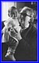

more LOPATA scroll down and/or click thumbnails for larger photos
Jacques Tancerman

Léa & Isabelle Tancerman
the Tancermans
Jacques & Jean-Louis Tancerman
Lou Lopata
Albert's grandchildren
Alex & Sophie
Seymour, Minnie, & others
Harriet & Jean-Louis
Roony & Jacques
Berthe & Terry
Jacques Tancerman
Tancermans
Leslie & Harriet & Jean-Louis
Leslie & Tancermans
Leslie & Tancermans
Leslie Lopata